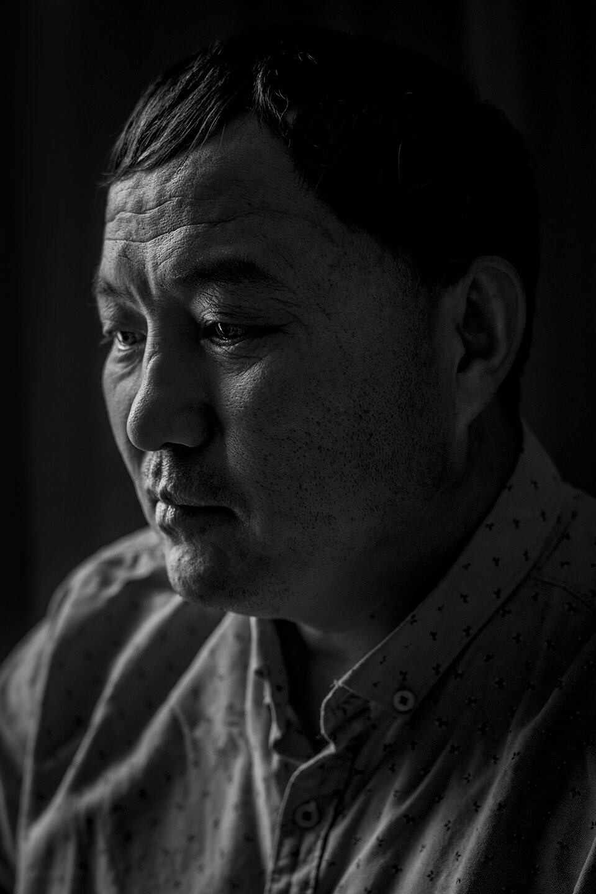
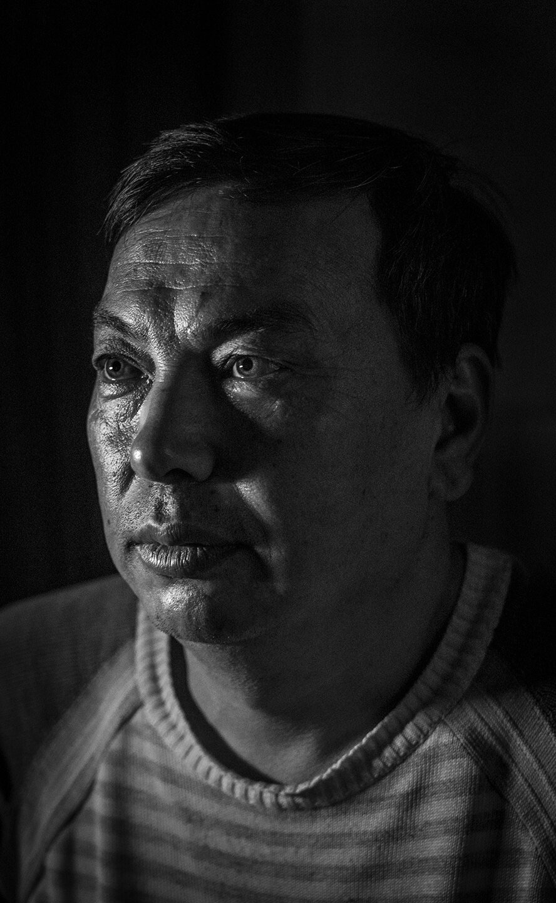
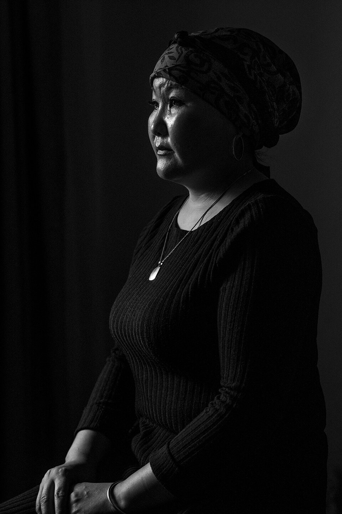
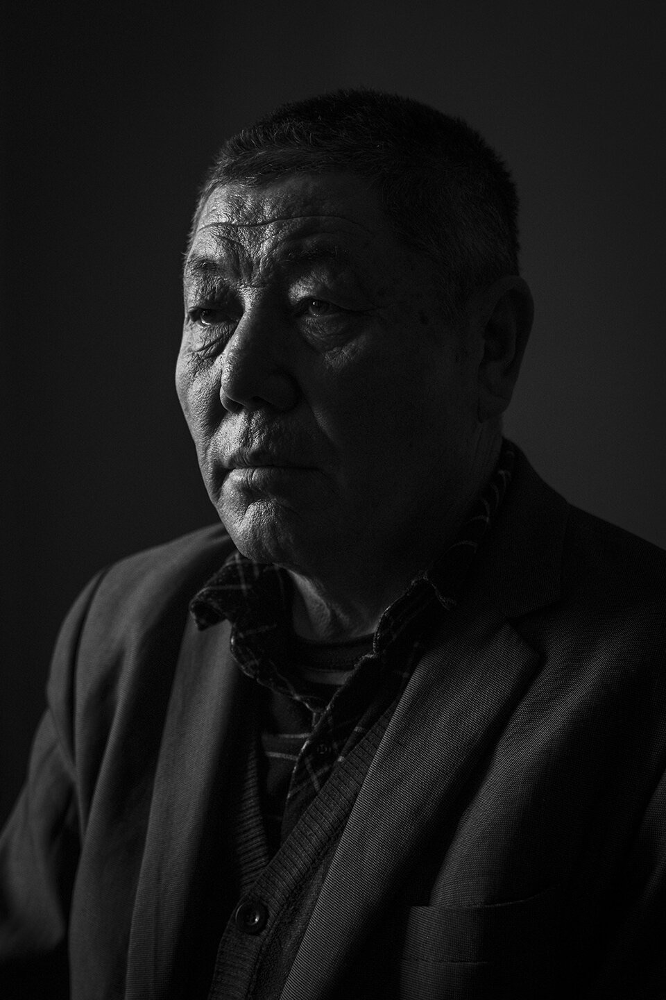
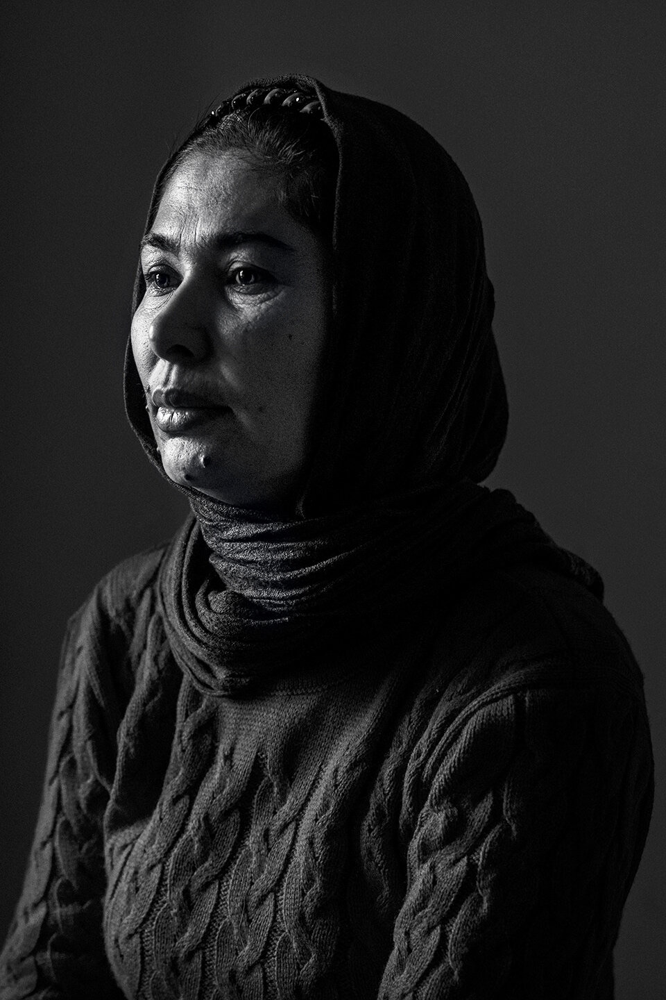

Back
Xinjiang Portraits
Portraits commissioned by The New Yorker as part of the project ‘Inside Xinjiang’s Prison State’ launched on The New Yorker’s website in early March 2021.
6 photographs





